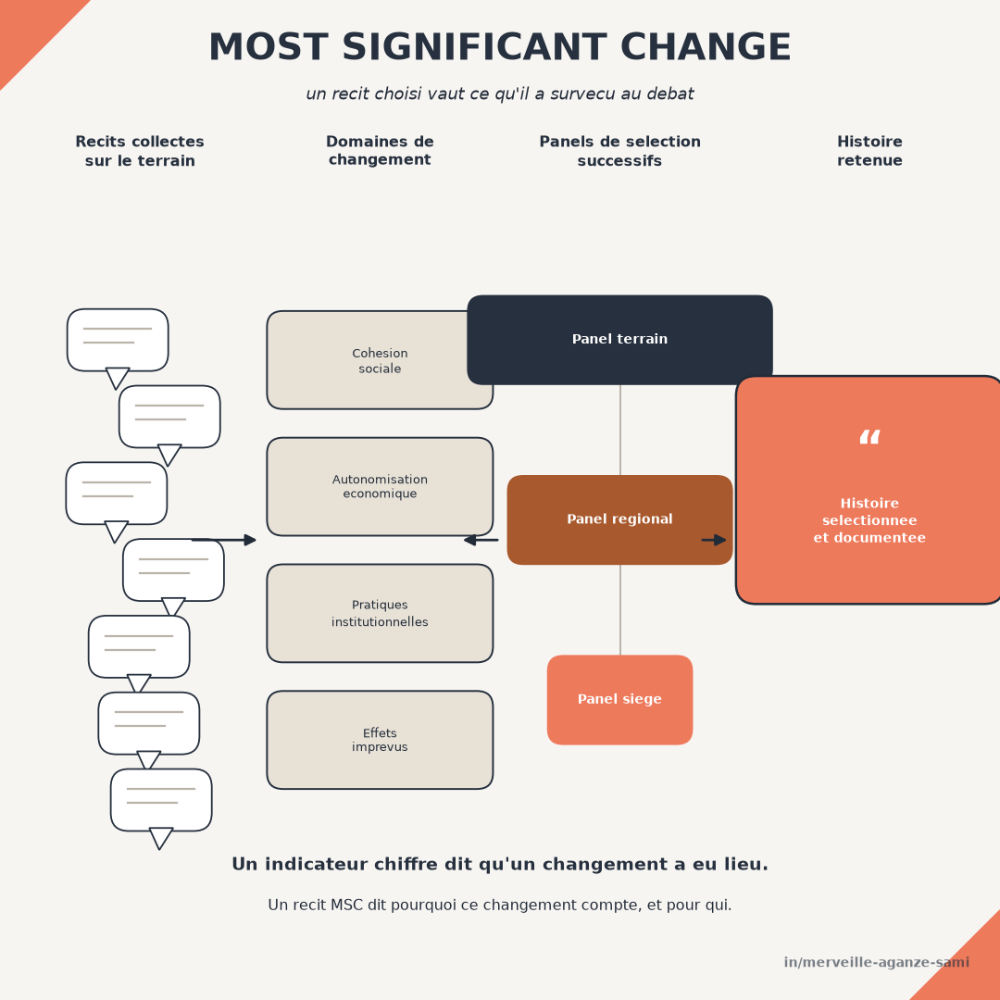

Un cadre logique organise la mesure autour d'une théorie du changement formulée avant la mise en œuvre. Les indicateurs qu'il contient répondent à une question précise : ce qui était prévu s'est-il produit, et dans quelle proportion ? Cette construction remplit sa fonction, mais elle comporte une limite structurelle — elle ne peut mesurer que ce qui a été anticipé au moment de la conception.
Les effets non prévus, favorables ou défavorables, échappent donc au dispositif. Un projet peut afficher des indicateurs conformes tout en produisant des transformations que personne n'a documentées, ou en générant des effets secondaires qu'aucune ligne du cadre ne signale. La technique du changement le plus significatif répond spécifiquement à cet angle mort.
1. Le principe de la méthode
La technique repose sur la collecte de récits de changement formulés par les personnes concernées, sans grille de réponse préétablie. Ces récits remontent ensuite à travers des instances successives — équipe de terrain, coordination régionale, direction — dont chacune sélectionne, par délibération, le ou les récits qu'elle juge les plus significatifs, en consignant par écrit les motifs de son choix (Dart & Davies, 2003).
L'objet réel de la sélection. Le résultat de la démarche n'est pas un échantillon représentatif de changements, et ne prétend pas l'être. Ce que la méthode produit, c'est un enregistrement explicite des critères de valeur mobilisés à chaque niveau de l'organisation : ce que les uns considèrent comme un changement important, et ce que les autres retiennent. La discussion sur ces divergences constitue une part substantielle de l'apport, au même titre que les récits eux-mêmes (Davies & Dart, 2005).
2. La mise en œuvre en quatre temps
- 1Définir les domaines de changement et la périodicité. Les domaines restent volontairement larges — évolution des pratiques, des relations, des conditions de vie — afin de ne pas reconduire la structure du cadre logique. La périodicité, généralement trimestrielle ou semestrielle, doit rester tenable dans la durée.
- 2Collecter les récits. La question posée est ouverte : quel a été, selon vous, le changement le plus important survenu au cours de la période, et pourquoi le jugez-vous important ? Le second volet de la question est celui qui porte l'information analytique.
- 3Organiser les panels de sélection. Chaque niveau examine les récits transmis, sélectionne et — point non négociable — documente ses motifs. Sans cette trace écrite, la méthode perd sa valeur analytique et se réduit à une collecte d'anecdotes.
- 4Restituer et vérifier. Les récits retenus sont renvoyés aux communautés concernées, et un échantillon fait l'objet d'une vérification factuelle. Cette double étape conditionne la crédibilité de l'ensemble.
3. Ce que la méthode apporte à un dispositif quantitatif
L'apport se situe sur trois plans distincts. Les effets non anticipés — y compris défavorables — deviennent visibles, alors qu'aucun indicateur préétabli ne pouvait les signaler. Les critères par lesquels les personnes concernées jugent un changement important sont documentés, ce qui déplace la définition du résultat hors du seul formulaire du bailleur. Enfin, les récits fournissent des éléments sur les mécanismes : ils indiquent comment un changement s'est produit, information qu'un chiffre agrégé ne contient pas.
Cette dernière propriété rend la méthode complémentaire des approches d'évaluation fondées sur la théorie, qui cherchent à établir la plausibilité d'une contribution en examinant la chaîne causale plutôt qu'en isolant statistiquement un effet (Mayne, 2012). Les récits alimentent directement l'examen des mécanismes supposés et, le cas échéant, en signalent les défaillances.
4. Conditions de rigueur
- Absence de représentativité. La sélection est délibérative, non probabiliste. Les récits retenus ne permettent aucune inférence sur la fréquence d'un phénomène et ne doivent jamais être présentés comme tels. Leur fonction est de documenter l'existence et la nature d'un changement, non son ampleur.
- Biais vers le positif. Les personnes interrogées par une équipe de projet tendent à rapporter des changements favorables. La formulation de la question doit inviter explicitement à mentionner les évolutions défavorables, et les panels doivent être tenus de retenir périodiquement un récit de ce type.
- Qualité de la facilitation. La méthode est sensible à la manière dont les récits sont recueillis. Une question orientée ou une reformulation par l'enquêteur transforme le matériau. La formation des personnes en charge de la collecte constitue un préalable, non une option.
- Charge de mise en œuvre. Panels, comptes rendus, restitutions et vérifications représentent un coût de coordination réel. Une mise en œuvre partielle — collecte sans panels, ou panels sans documentation des motifs — produit un matériau peu exploitable (Willetts & Crawford, 2007).
- Traçabilité de l'analyse. Les critères usuels de qualité de la recherche qualitative — traçabilité des décisions, confirmabilité, restitution aux personnes concernées — s'appliquent intégralement (Lincoln & Guba, 1985). Un protocole écrit, précisant les domaines, la composition des panels et le mode de consignation, doit accompagner la démarche.
5. Articulation avec le cadre logique
La technique ne se substitue pas au dispositif quantitatif ; elle en couvre l'angle mort. Une articulation simple consiste à conserver le cadre logique pour rendre compte de ce qui était prévu, et à mobiliser les récits pour documenter ce qui ne l'était pas, en traitant les deux sources dans un même exercice d'analyse plutôt que dans deux annexes séparées.
Les usages documentés dans la littérature récente confirment que la valeur de la méthode dépend fortement de la qualité du protocole retenu et de la constance de sa mise en œuvre dans la durée (Sharma et al., 2024). Une application ponctuelle, en fin de projet, en réduit sensiblement la portée.
Points essentiels
- Le cadre logique ne mesure que ce qui a été anticipé au moment de la conception
- La méthode collecte des récits ouverts et les fait sélectionner par des panels successifs
- La documentation écrite des motifs de sélection porte l'essentiel de la valeur analytique
- Les récits ne sont pas représentatifs : ils documentent l'existence d'un changement, non sa fréquence
- Le biais vers le positif doit être traité explicitement dans la formulation et dans les consignes de panel
Un indicateur établit qu'un changement a eu lieu et dans quelle proportion. Un récit sélectionné et argumenté indique pourquoi ce changement compte, pour qui, et selon quels critères. Les deux informations sont nécessaires à une lecture complète des résultats.
Références
- Dart, J., & Davies, R. (2003). A Dialogical, Story-Based Evaluation Tool: The Most Significant Change Technique. American Journal of Evaluation, 24(2), 137–155. doi.org/10.1177/109821400302400202
- Davies, R., & Dart, J. (2005). The « Most Significant Change » (MSC) Technique: A Guide to Its Use. CARE International, Oxfam Community Aid Abroad et al.
- Lincoln, Y. S., & Guba, E. G. (1985). Naturalistic Inquiry. Beverly Hills: Sage Publications.
- Mayne, J. (2012). Contribution analysis: Coming of age? Evaluation, 18(3), 270–280. doi.org/10.1177/1356389012451663
- Sharma, M. K., Khanal, S. P., & van Teijlingen, E. (2024). Most Significant Change Approach: A Guide to Assess the Programmatic Effects. International Journal of Qualitative Methods, 23. doi.org/10.1177/16094069241272143
- Willetts, J., & Crawford, P. (2007). The most significant lessons about the Most Significant Change technique. Development in Practice, 17(3), 367–379. doi.org/10.1080/09614520701336907

Merveille Aganze Sami
Conseillère MEL & Gestion de Bases de Données. Plus de 9 ans d'expérience en suivi-évaluation, SIG et digitalisation auprès d'organisations internationales (GIZ, Enabel) en RD Congo.
Un dispositif de suivi à compléter par du qualitatif ?
Prendre contact